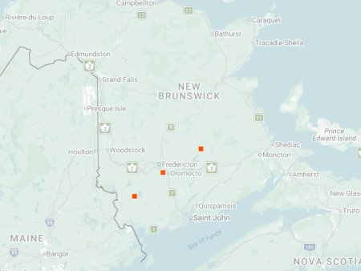

photo: Jimmy Dee, June 24, 2022

Distribution map (based on iNaturalist observations)
Identification
- Small-medium (10–13 mm), dark bronze with white maculations often reduced or absent.
- Head and pronotum metallic green; long legs for fast running.
- Active early in spring; short, quick flights when disturbed.
Habitat in New Brunswick
Found on large sandy areas, gravel roads, and open fields with bare ground. All three known NB sites are near airports or airstrips (Upper Brockway, Lincoln, Chipman), suggesting a preference for dry, disturbed sandy expanses.
Flight Season in NB
May 25 – October 4 (spring–fall; peaks May–June).
Distribution & Notes
Very rare in New Brunswick — known from only three locations, all large sandy areas near airports/airstrips. First NB record discovered by Reggie Webster. Limited sightings despite surveys; more work needed to understand distribution and habitat needs.